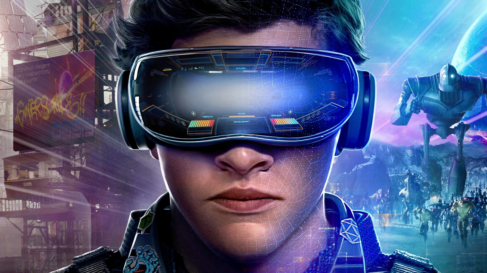

Виртуальная реальность здесь и сейчас
Последние несколько лет стали революционными для технологии VR (virtual reality) и мы можем ожидать ещё больших прорывов в будущем. Большинство компаний открыло свои самостоятельные отделы по разработке игр с использованием VR. Например, Sony выпускает шлемы виртуальной реальности PlayStation VR. А компания Oculus специализируется на создании Oculus Rift - очков виртуальной реальности. По предварительным прогнозам, к 2025 году рынок VR превысит $45 млрд. Всё это указывает на большой потенциал VR в рамках игровой индустрии.
Игровая индустрия сегодня: Тренды, инновации и большие деньги
Вместе с VR развиваются технологии дополненной реальности – AR (augmented reality). AR используют преимущественно в рамках мобильных приложений. Нашумевшим примером стала игра Pokemon GO, создавшая волну интереса к AR. Такие компании, как Apple и Facebook вкладываются в перспективный рынок, ожидая от технологии прорыва в сферах развлечений, образования и науки. Согласно исследованию Augmented Reality Market мировой рынок дополненной реальности вырастет на 76,6% с $4,1 млрд в 2018 году до $124,4 млрд в 2022 году.
Инди-игры с душой
Пока высокобюджетные игры критикуют за слишком большой уклон в коммерцию, для ценителей искусства есть сегмент инди-игр,где разработчики проявляют абсолютную свободу творческого самовыражения. Именно в этих авторских играх можно увидеть действительно ручную работу, внимание к каждой детали и настоящую любовь к делу. Одной из тех игр, которая показала индустрии, что инди-игры могут быть коммерчески успешными и при этом способны сохранить индивидуальный стиль, была -Journey, вышедшая в 2012 году. Она стала наиболее быстро продаваемой игрой онлайн-маркета PlayStation Store. Средняя оценка на авторитетном ресурсе Metacritic составляла 92 из 100.
Если раньше инди-игры воспринимались с долей скептицизма из-за ограниченных финансовых возможностей, отсутствияпродвижения и узнаваемого имени, то после таких прорывов, как это было с Journey, всё изменилось.
К 2018 году большие студии, такие как Sony или Microsoft активно поддерживают независимых разработчиков, предоставляя имресурсы и площадку для творчества. Благодаря этой стратегии, истинные ценители могут в практически одинаковой меренаслаждаться высокобюджетными блокбастерами и камерными приключениями.
Игры как спорт, где можно заработать
Традиционно спортом считают дисциплины, где нужно бежать, прыгать, а не просто нажимать на клавиши, часами всматриваясь в монитор компьютера. Эта точка зрения безнадёжно устарела, ведь в 2018 году киберспорт является одной из самых быстро развивающихся сфер в игровой индустрии. За международными соревнованиями по Dota 2 или FIFA наблюдают миллионы человек. Онлайн-трансляции своих выступлений на Twitch и Youtube проводят как любители, так и профессионалы. Согласно отчёту Newzoo, к следующему году прогнозируется общая прибыль от киберспорта в $906 млн. А годовой рост составит около 38%. Общая аудитория, наблюдающая за чемпионатами и турнирами, вырастет до 14% к 2018 году. Самыми популярными онлайн-играми среди киберспортсменов стали Dota 2, League of Legends и Counter-Strike: Global Offensive.Сегодня, игровая индустрия переживает новый этап развития. Всё большую экономическую роль отводят игровым компаниям, которые формируют ключевые тренды и создают инновации. Основываясь на отчётах и мнениях экспертов, можно с уверенностью говорить, что рынок игр становится глубже и масштабней. В нём есть место прорывным технологиям виртуальной реальности, расширяющейся пользовательской базе мобильного гейминга и высокобюджетным спортивным состязаниям.
Учитывая сегодняшние реалии, будущее игровой индустрии обещает быть по-настоящему захватывающим.